科隆群岛：烈火中诞生的伊甸园
2021 · 4 · 20
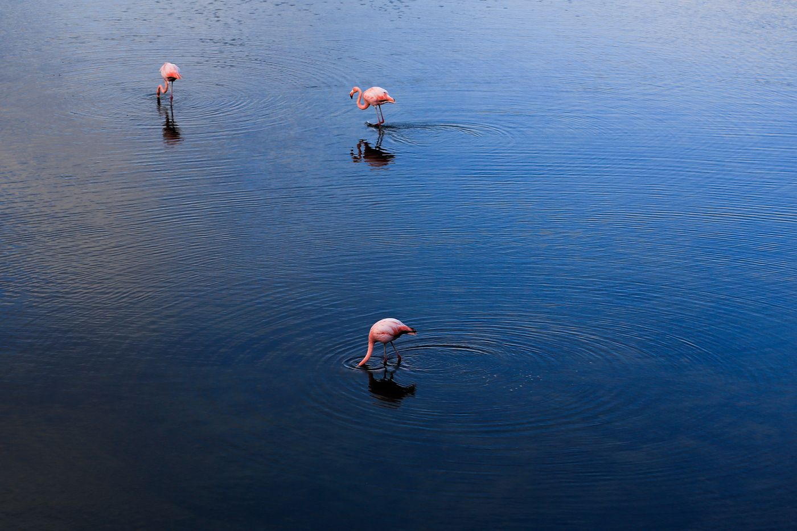
科隆群岛，又名加拉帕戈斯群岛。坐落在太平洋东部，靠近赤道，离南美洲一千多公里。对于人类，这实在是个偏僻之处。大航海时代开启后的16世纪，才第一次有人登上这座岛屿。
它被世人所知，大多是因为达尔文，以至于有时被称作达尔文群岛。19世纪时，达尔文注意到这里不同岛屿上象龟和燕雀有细微的差异，分别适应自己所处的生境。这种“适应”，意味着物种并不是稳定存在的，为发现演化机制提供了启发。
群岛诞生自烈火，海底喷出的岩浆源源不断地冷却成岩。漆黑粗粝的火山岩构成了岛屿的基质，热带的温度与降水则为土壤发育提供了环境。群岛中，既有从地底喷涌而出的岩浆，也有枝叶繁茂的热带雨林。
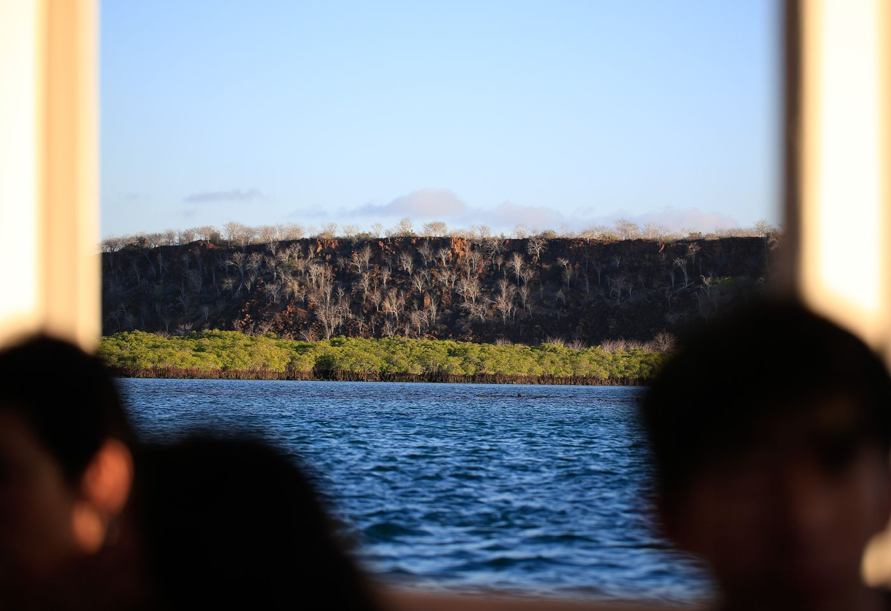
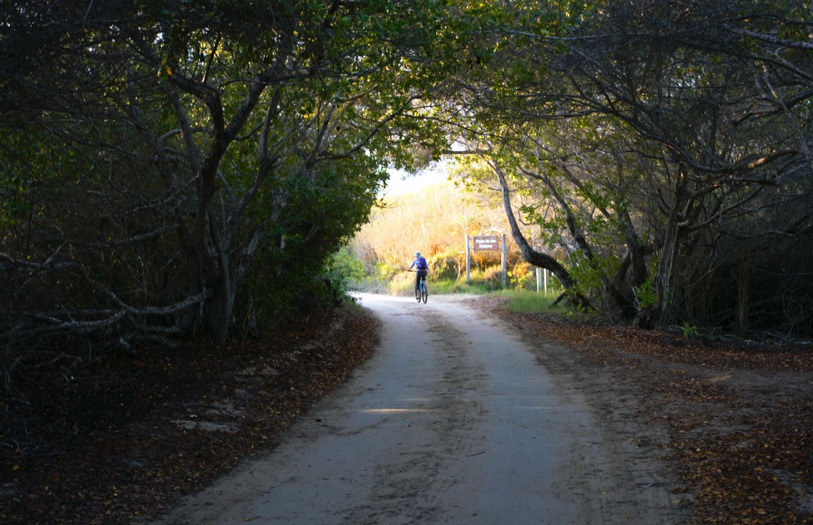

科隆群岛上有许多独特而有趣的动物。
比如有种鬣蜥，长得像微缩版的哥斯拉，却是纯粹的素食者。它们每天摆动着长长的尾巴跳入海里，屏住呼吸潜入水中，啄食海底岩石上生长的海藻。然后回到岸边，懒洋洋地晒着太阳，没事儿时从鼻孔中喷出聚积在体内的盐分。
再比如，有多种象龟，体型硕大，能长至1.5米、重达175公斤、活到近两百岁。它们在陆地上缓慢地行走，挑选着青草的嫩叶和仙人掌的果实，吸允着枝叶上的露水。它们记得自己走过的地方，一代代沿袭着迁徙路线；而它们常走的路，在茂密的灌丛中变成了稳定的通道，被称作“乌龟公路”。
还有数量众多的海鸟，在海陆空的交界处徜徉，在渔民们打鱼归来时争抢着案板上落下的美味。其中有粉红的火烈鸟，与天空、海洋和湖泊形成毫不妥协的反差，时不时在一片蓝色和绿色的静郁中划出一道道艳丽。
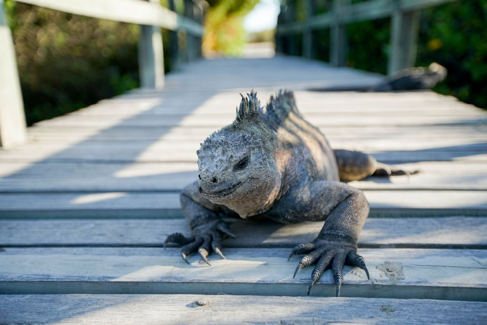
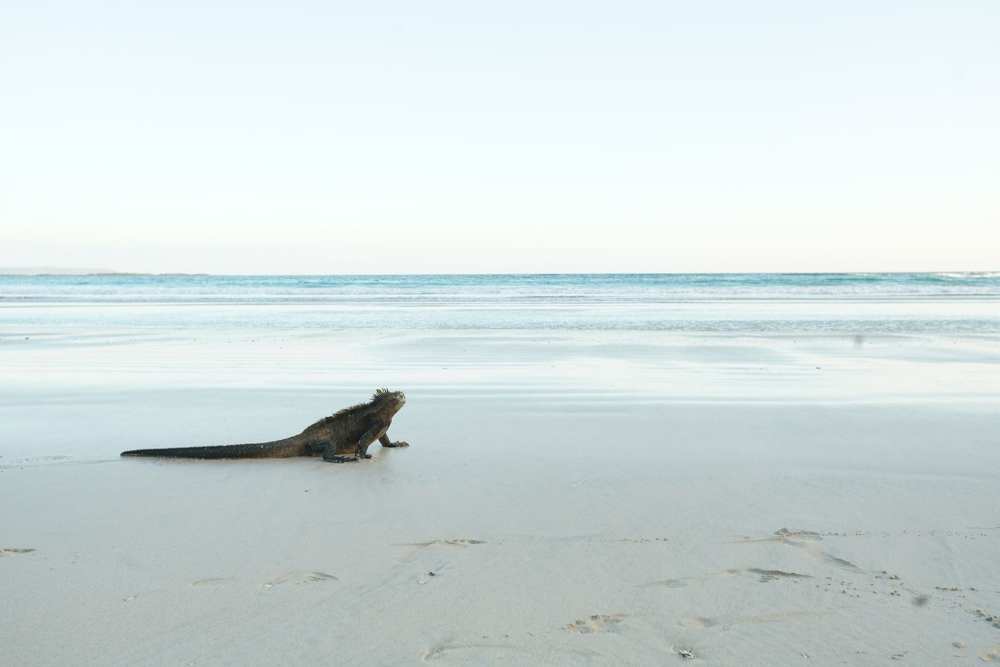
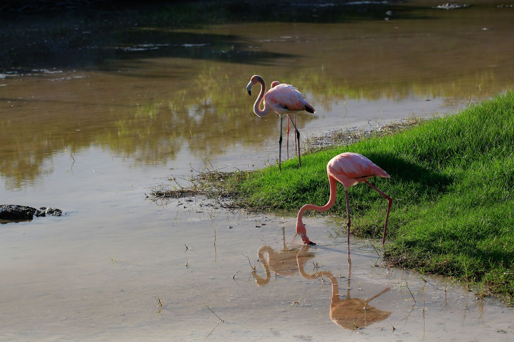
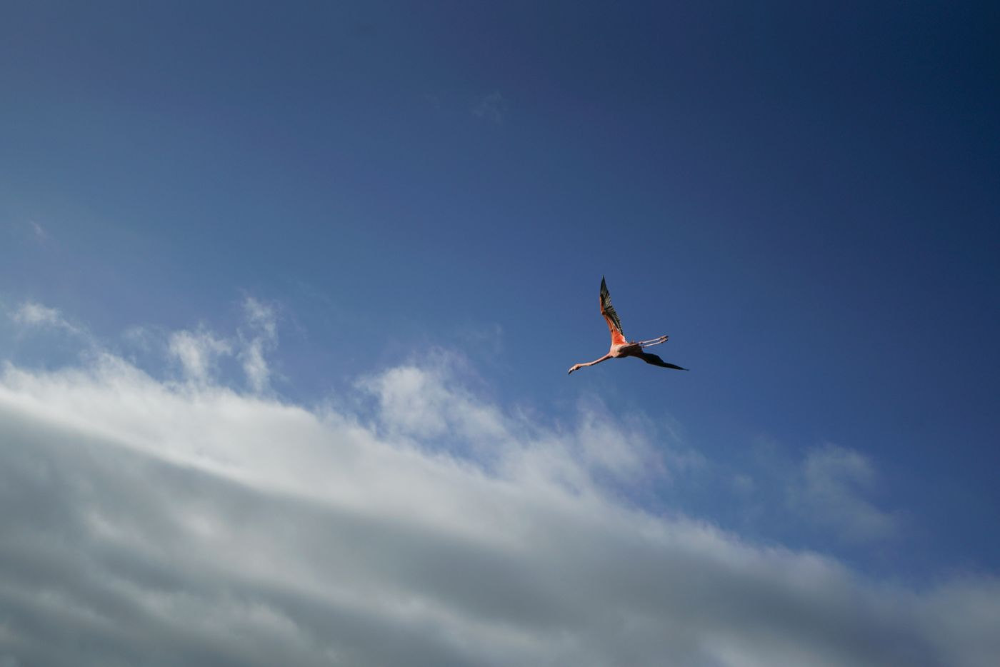
但这里最令人印象深刻的，不是独特的地貌和动植物，而是动物与人的关系。直到16世纪才第一次与人类接触，这里的动物们还未习得对人类的恐惧，只是像对待彼此一样与人类相伴。
所以你会看到，海狮躺在栈桥上的椅子里，对坐在旁边的你毫不介意；当你坐得太近时，他会大喝一声，让你注意礼貌。海龟慢悠悠地煽动着双臂在水中飞翔，时不时抬头看看水面上费力游动的你，像是在思考这又是什么怪物。鲨鱼成群结队地从一个岩洞游往另一个岩洞，对你这个两脚兽见怪不怪。而海鬣蜥、军舰鸟和许多其他动物，大约只是在你挡路的时候嫌你比较麻烦罢了。
随处可见的保护区标语写着注意与野生动物保持距离，似乎是在提醒，这里的生灵里需要注意尊重彼此的，是你这个识字的人类。
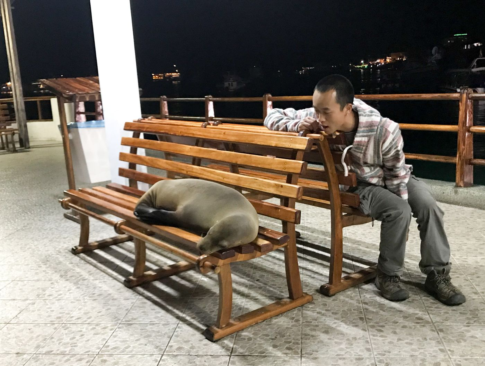
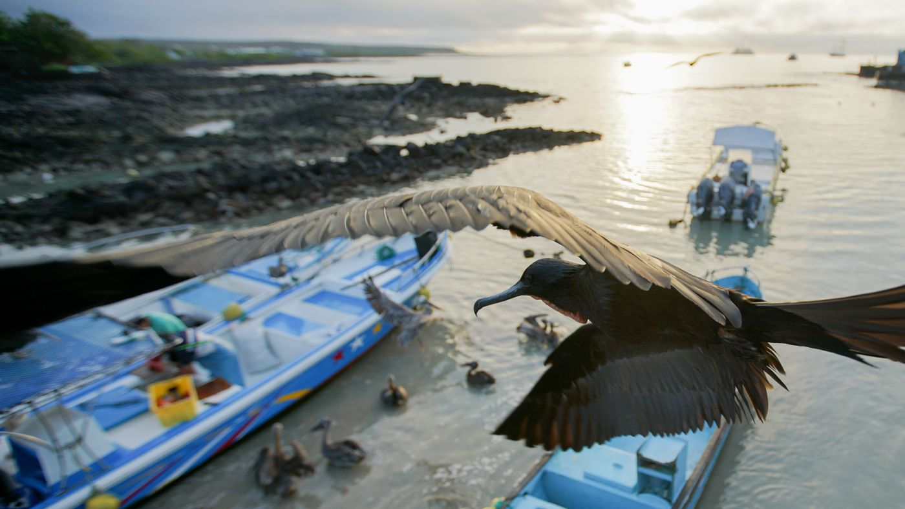
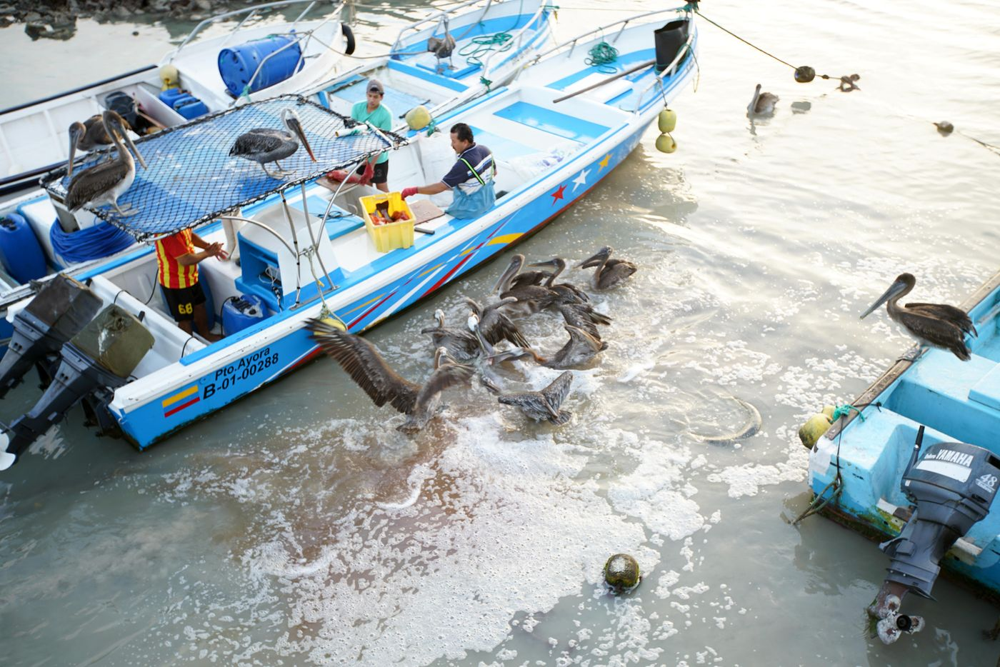


除了种类繁多的动植物，科隆群岛也有繁衍生息的当地居民。和南美洲许多其他地方一样，这里也是不折不扣的人口大熔炉。酷似亚洲人的原住民面孔，来自欧洲的金发碧眼，从非洲迁徙来的黝黑肤色，都能在人群中找到踪迹。
在热带，人们的性格与气候一样热烈，新年之夜尤其如此。人们穿上喜爱的衣裳，呼朋引伴，聚积在广场中。乐队开始演出，人们随音乐旋转起舞，随夜色醉入温热的海风中。老太太们装扮得花枝招展，笑起来依旧是少女的神态。推着婴儿车的新手妈妈们，高跟鞋和红唇毫不含糊，短裙和婴儿毯一起在晚风中飘扬。
不过节日里最开心的，还是孩子们。他们成群结队地绕着舞台奔跑，对着镜头咧出还没换完的乳牙，像麻雀穿过树枝一般穿过微醺的大人们。
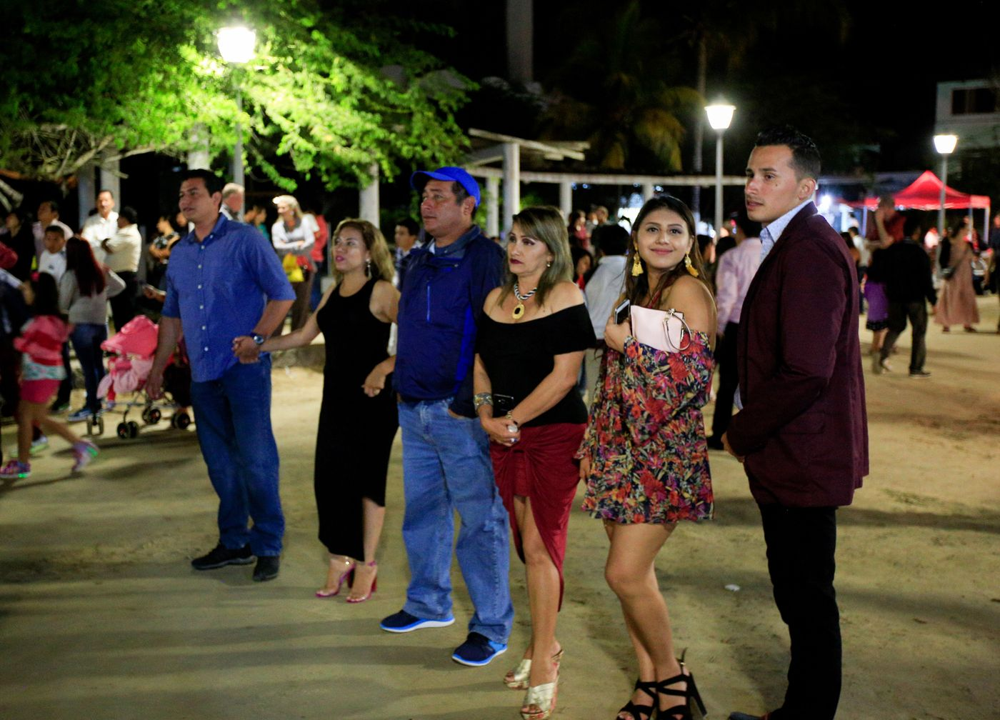
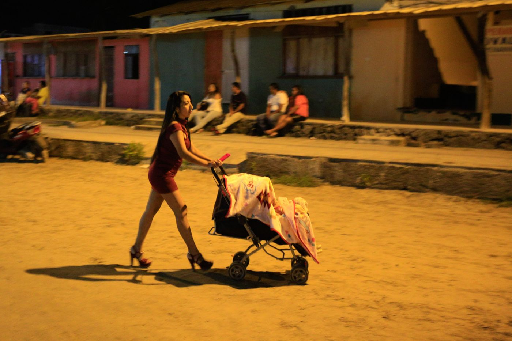
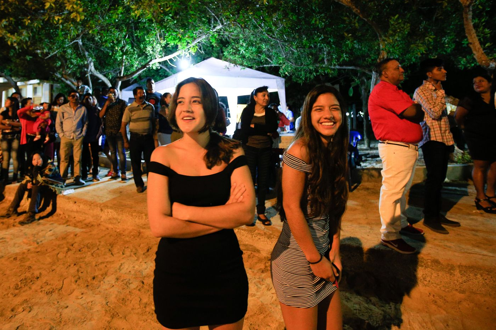
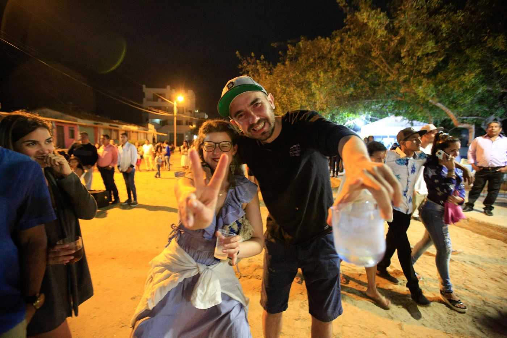
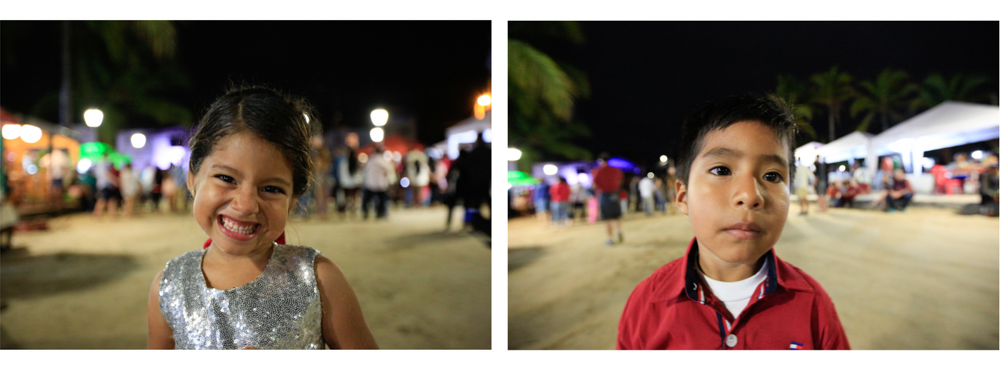
接近午夜时分，跳累了的人们慢慢安静下来，聚在一起，开始放飞一只只天灯。
家家户户小心翼翼地展开天灯的薄纸，举过头顶，点亮一团团小小的火焰。人们仰着面孔，火光中的眼睛闪烁着紧张与期待。天灯徐徐上升，胀满的热气带着愿望和想象，离地面上兴奋的人们越来越远，直到融入满天繁星。
离开科隆群岛之后，我一直难以忘怀的是这里人与动物的相安无事。
我意识到，这该是自然的本来面目。生灵万物原本没有对人的恐惧，而作为万物之灵长的人类，除了杀戮与奴役之外，也应当去守护和养育。
但世界只有一个科隆群岛。在其他地方，每年有三万种物种正在灭绝。与此同时，人类将大量资金注入移民火星的梦想，全然不顾我们赖以生存的空气、水、食物和能源不是来自于技术与文明，而是来自于超出我们理解能力的生态系统。
不管是喜是悲，地球经历过许多次物种大灭绝，盛极一时的物种一次次消失在历史中，但生命还是继续繁衍。地球会创造新的大陆和岛屿，烈火与灰烬中会诞生新的生命。海豚与海龟也会继续遨游，无论人类在还是不在。
你的照片是專業等級的耶
上次西藏那篇有發現，但沒有多想
然後我對鬣蜥沒有抵抗力，好可愛～～融化
謝謝你！的確在攝影上花了不少時間精力 😊
我也從小就很喜歡鬣蜥，乾淨又可愛～
同感🙋♂️（那只鬣蜥好像哥斯拉，）
天啊超級美的！好多野生動物！
是的，野生動物的形象和狀態都很可愛～
特别点赞刘果的围炉！我不太愿意暴露自己的信用卡，等我搞个匿名帐号再来订阅的。
谢谢支持！😁
专业级别的照片。iguana 鬣蜥 在加勒比海诸岛到处可见，我见过不同颜色的，大摇大摆地，不怕人。当地人也很淳朴。